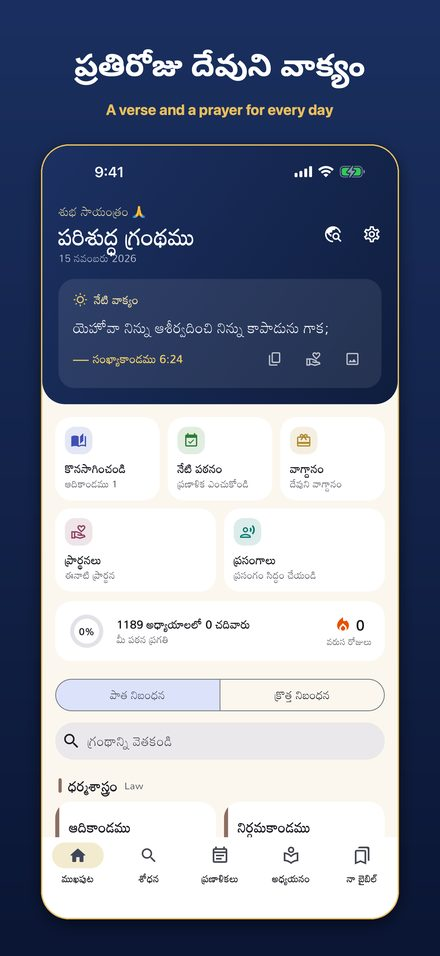
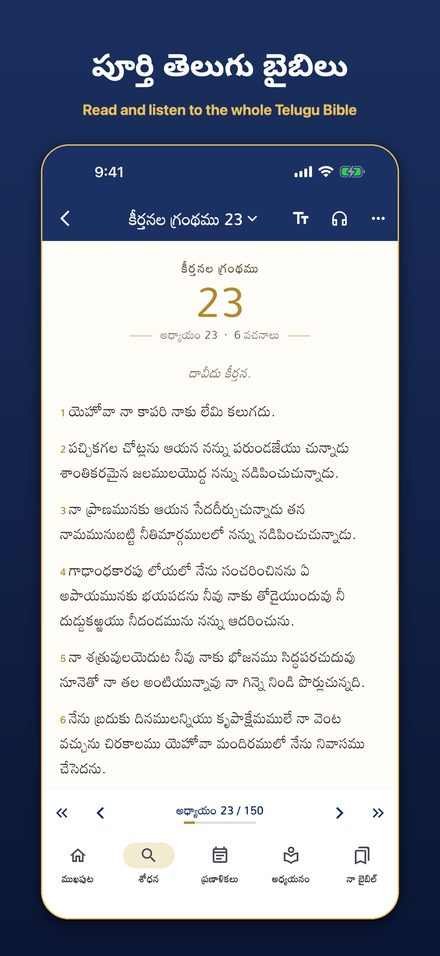
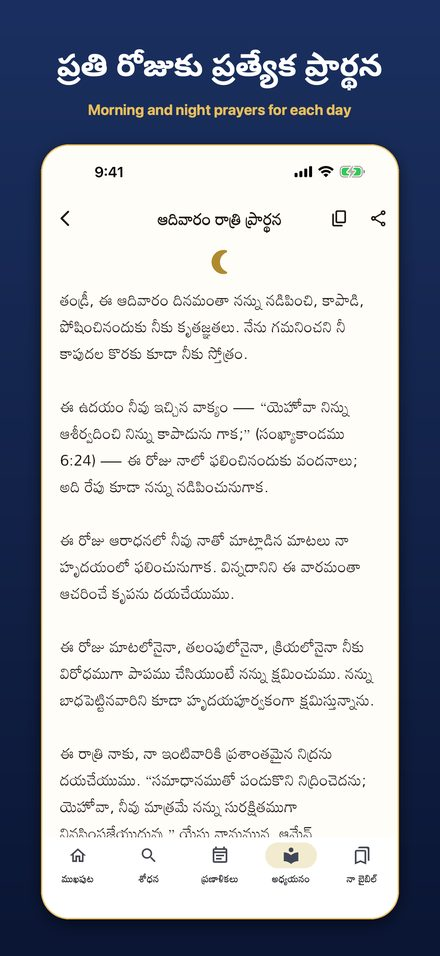

పూర్తి తెలుగు బైబిలును (66 గ్రంథాలు) చదవండి, వినండి, దేవుని వాక్యంతో ప్రతిరోజు నడవండి. ఇంటర్నెట్ లేకుండానే పనిచేస్తుంది.
The complete Telugu Bible with English (KJV) side by side — read, listen, search in Telugu or English, a daily verse, morning and night prayers for each day and festival, a sermon builder, profiles of 195 Bible people, 26 reading plans, bookmarks, highlights, notes and nearby churches. Works offline. No ads, no sign-up.



సహాయం · Support
ప్రశ్న, సమస్య లేదా సూచన ఉందా? Have a question, found a problem, or want to suggest something?
👉 Write to us here (a free GitHub account is needed to post).
తరచుగా అడిగే ప్రశ్నలు · FAQ
చదవడం వినిపించడం లేదా? / Reading aloud doesn't work?
The app uses your phone's Telugu voice. iPhone: Settings → Accessibility → Spoken Content → Voices → Telugu. Android: Settings → System → Languages → Text-to-speech → Google → install Telugu.
నా బుక్మార్క్లు కొత్త ఫోన్కి? / Moving to a new phone?
In the app open Settings → Backup and export: the backup is copied. Paste it somewhere you can reach from the new phone (a note or a message to yourself). On the new phone, copy that text, then open Settings → Backup and restore.
దగ్గరలోని చర్చిలు కనిపించడం లేదా? / Nearby churches empty?
Allow location for the app, check the internet connection and try a larger distance. Church details come from OpenStreetMap, so small churches may be missing.